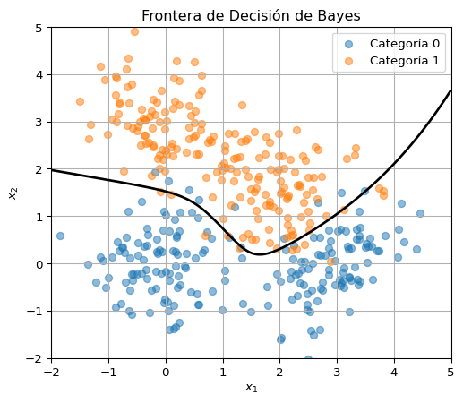
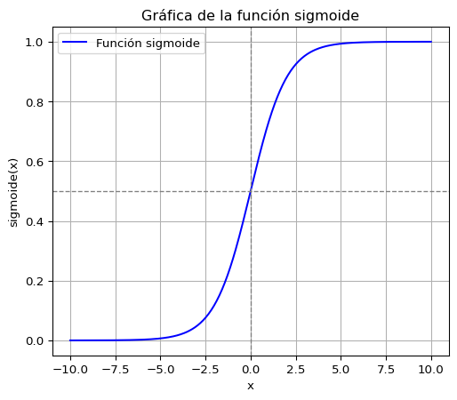
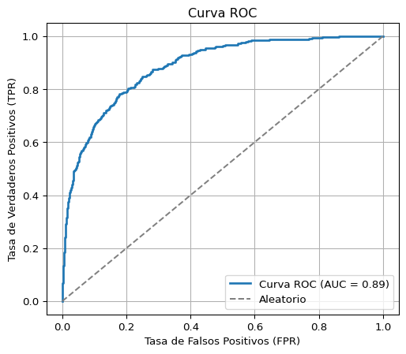
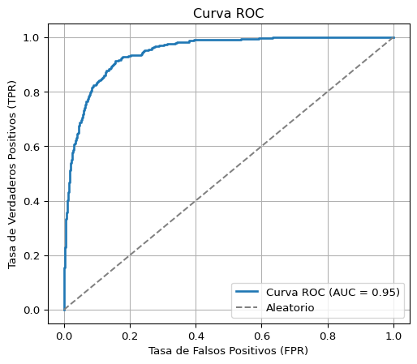
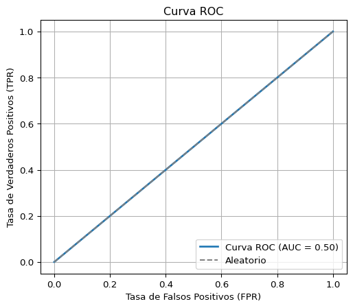
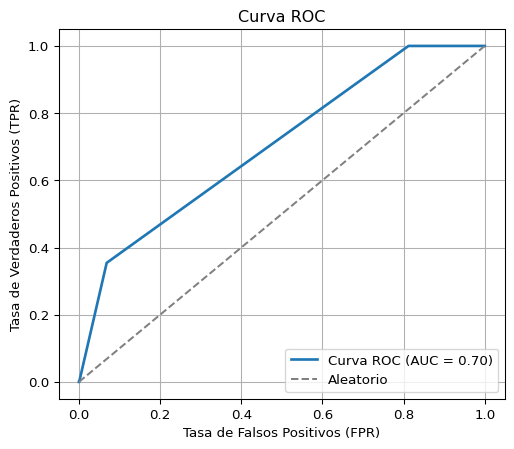

La clase pasada estudiamos problemas de regresión, en los cuales tratamos de predecir una variable numérica \(Y\) a partir de un conjunto de predictores \(X\). Ahora nos enfocamos en el caso en el cual \(Y\) es una serie de categorías. En física esto puede surgir cuando queremos clasificar imágenes. Por ejemplo determinar el tipo de una galaxia en una imágen. Otro ejemplo es clasificar eventos en un detector de partículas en la categoría de señal o ruido.
Variables Categóricas
¿Cómo podemos describir una variable que no toma valores numéricos? Podemos intentar usar un número entero para cada categoría. Si son dos categorías, estas las podemos marcar \(0\) o \(1\). Para \(n\) categrorías podemos usar \(1, ..., n\).
Si \(Y\) es categórica podemos intentar usar una regresión lineal para predecirla a partir de los valores de \(X\). Esto nos dará un número real y podemos tomar el entero más cercano para determinar la categoría.
Esto funciona parcialmente pero tiene algunos problemas: En muchos casos las categorías no tienen un orden definido. Si queremos clasificar galaxias en elípticas, barradas y espirales, podemos asignar \(0\), \(1\) y \(2\) respectivamente. Pero en ningún sentido son las galaxias espirales mayores que las barradas y las elípticas. Esto complica la interpretación. Además no tenemos un modelo que corresponde al sistema que describe, lo que generalmente aumenta el sesgo.
Cuando hay varias categorías podemos evitar asignarles un orden con una técnica llamada “one-hot encoding”. Consiste en crear una variable ficticia para cada categoría. Cada una de esas variables vale \(1\) cuando el dato pertenece a esa categoría o \(0\) de otra manera.
Estas mismas estrategias se pueden usar cuando alguno de los \(X\) es categórico.
Clasificador de Bayes
Para describir el problema de clasificación imaginamos que dados los valores de \(X\), tenemos una cierta probabilidad de pertenecer a la categoría \(j\). Es decir, tenemos \[
P(Y=j|X)\,.
\] Esto es porque en general el valor de \(X\) no determina completamente la categoría. Siempre hay un pequeño error. Cuando conocemos esta probabilidad podemos asignar cada dato a la categoría más probable. Este se llama el clasificador de Bayes.
Los modelos de clasificación consisten en intentar estimar \(P(Y=j|X)\) de alguna manera.
Código
import numpy as npimport matplotlib.pyplot as pltfrom scipy.stats import multivariate_normalnp.random.seed(42)# Definir los componentes Gaussianosdistribuciones = [ {"media": [0, 0], "cov": [[0.5, 0], [0, 0.5]], "etiqueta": 0}, {"media": [3, 0], "cov": [[0.5, 0.2], [0.2, 0.5]], "etiqueta": 0}, {"media": [0, 3], "cov": [[0.5, -0.2], [-0.2, 0.5]], "etiqueta": 1}, {"media": [2, 1.5], "cov": [[0.5, 0], [0, 0.5]], "etiqueta": 1},]# Generar datospuntos = []etiquetas = []for dist in distribuciones: muestras = np.random.multivariate_normal(dist["media"], dist["cov"], size=100) puntos.append(muestras) etiquetas.extend([dist["etiqueta"]] *100)puntos = np.vstack(puntos)etiquetas = np.array(etiquetas)# Crear una malla para calcular la frontera de decisiónx1, x2 = np.meshgrid(np.linspace(-2, 5, 300), np.linspace(-2, 5, 300))rejilla = np.column_stack([x1.ravel(), x2.ravel()])# Evaluar las probabilidades posterioresprob_0 = np.zeros(len(rejilla))prob_1 = np.zeros(len(rejilla))# Supongamos priori uniforme y pesos iguales para cada Gaussiana dentro de su categoríafor dist in distribuciones: gaussiana = multivariate_normal(mean=dist["media"], cov=dist["cov"])if dist["etiqueta"] ==0: prob_0 += gaussiana.pdf(rejilla)else: prob_1 += gaussiana.pdf(rejilla)# Calcular la diferencia de probabilidades para trazar la fronteradiferencia_posterior = prob_0 - prob_1diferencia_posterior = diferencia_posterior.reshape(x1.shape)# Graficar los puntosplt.figure(figsize=(6, 5))plt.scatter(puntos[etiquetas ==0][:, 0], puntos[etiquetas ==0][:, 1], alpha=0.5, label='Categoría 0')plt.scatter(puntos[etiquetas ==1][:, 0], puntos[etiquetas ==1][:, 1], alpha=0.5, label='Categoría 1')# Graficar la frontera de decisión de Bayes (donde la diferencia posterior es cero)plt.contour(x1, x2, diferencia_posterior, levels=[0], colors='black', linewidths=2)plt.title("Frontera de Decisión de Bayes")plt.xlabel("$x_1$")plt.ylabel("$x_2$")plt.xlim([-2,5])plt.ylim([-2,5])plt.legend()plt.grid(True)plt.show()

Figura 1
En la Figura 1 graficamos un caso típico de clasificación. Los puntos están mezclados cerca de la frontera que separa las dos regiones. Esa frontera es la frontera de Bayes. La frontera de Bayes es la que obtiene el error menor, en el sentido que es la que clasifica erróneamente el menor número de puntos.
Clasificador de los \(k\) Vecinos Más Cercanos
Una manera de estimar la categoría más probable es promediar en una región. Es decir, para cada punto miramos los \(k\) datos más cercanos y le asignamos la categoría mayoritaria entre esos. El valor de \(k\) lo fijamos antes de calcular. Este método se llama de los \(k\) vecinos más cercanos (kNN).
Este es el primer ejemplo que vemos de un método no paramétrico. La probabilidad estimada no depende de ningún parámetro para \(k\) fijo. El valor de \(k\) se llama un hiperparámetro de este método. Para tener una intuición de cómo escogerlo repitamos nuestro ejemplo para varios valores de \(k\).
En la Figura 2 vemos que la frontera de decisión no comete ningún error. Clasifica correctamente todos los puntos del conjunto de datos usado para entrenarla. En este sentido la frontera no tiene sesgo.
Sin embargo, esa frontera se ajusta demasiado a estos datos. Si la entrenamos con datos distintos, será una frontera diferente. Veamos el resultado en la Figura 3.
En este sentido la frontera tiene una gran varianza. Este es un ejemplo del balance entre sesgo y varianza. El problema de tener una varianza grande es que el modelo no funcionará bien con datos nuevos ya que la clasificación se ajustó a los datos de entrenamiento.
En la Figura 2 vemos que el error en el conjunto de entrenamiento es cero. Pero sabemos que el error será mayor en datos nuevos. ¿Cómo podemos evaluar el modelo para saber si será bueno a la hora de predecir? Ese es el tema de la próxima clase.
La frontera ahora es más suave y podemos esperar que tenga menos varianza. Pero al mismo tiempo tiene un poco de sesgo al clasificar erróneamente algunos puntos (respecto a la frontera de Bayes).
Regresión logística
Una alternativa es usar un modelo paramétrico para aproximar la probabilidad. La ventaja de los métodos paramétricos es que son más interpretables y necesitan menos datos para su entrenamiento. La desventaja es que debemos conocer o suponer algo sobre el sistema para poder parametrizar la probabilidad.
Una manera sencilla de aproximar la probabilidad es usar la regresión lineal. Sin embargo, no podemos interpretar \(P = \beta_1 X + \beta_0\) como una probabilidad ya que puede tomar valores fuera del rango \([0,1]\).
Lo que hacemos es escribir la función logística\[
\sigma(x) = \frac{e^{x}}{1 + e^{x}}\,.
\] Esta funcіón tiende a \(0\) cuando \(x\rightarrow -\infty\) ya que el numerador se anula, y tiende a \(1\) cuando \(x\rightarrow \infty\) ya que el exponencial domina en el denominador. Por lo tanto podría representar una probabilidad.
Código
import numpy as npimport matplotlib.pyplot as plt# Definir la función sigmoidedef sigmoide(x):return1/ (1+ np.exp(-x))# Crear un rango de valores para xx = np.linspace(-10, 10, 400)# Calcular la salida de la función sigmoidey = sigmoide(x)# Graficarplt.figure(figsize=(6, 5))plt.plot(x, y, label="Función sigmoide", color="blue")plt.title("Gráfica de la función sigmoide")plt.xlabel("x")plt.ylabel("sigmoide(x)")plt.grid(True)plt.axvline(0, color='gray', linestyle='--', linewidth=1)plt.axhline(0.5, color='gray', linestyle='--', linewidth=1)plt.legend()plt.show()

Entonces el modelo de regresión logística toma \(p(x) \equiv P(X|Y=1) = \sigma(\beta_0 + \beta_1 X)\), \(P(X|Y=0) = 1 - P(X|Y=1)\). En otras palabras \[
\log\left(\frac{p(X)}{1 - p(X)}\right) = \beta_0 + \beta_1 X\,.
\] A la función del lado izquierdo a veces se lo llama el logit.
Para encontrar los valores de \(\beta_0\) y \(\beta_1\) se aplica el principio de máxima verosimilitud.
Ajuste de los coeficientes
Para encontrar los coeficientes de la regresión logística, escribimos primero la verosimilitud \[
L(\beta) = \prod_i P(x_i|y_i)\,.
\] Como siempre, es más fácil trabajar con el logaritmo \[
\begin{multline*}
\ln L(\beta) = \sum_i \ln P(x_i|y_i) = \sum_i \left(y_i\ln p(x_i) + (1 - y_i)\ln(1 - p(x_i))\right) \\= \sum_i \left(y_i(\beta_0 + \beta_1 x_i) - \ln(1 + e^{\beta_0 + \beta_1 x_i})\right)\,.
\end{multline*}
\] Para encontrar el mínimo buscamos la derivada y la igualamos a cero. La ecuación resultante es no lineal y debemos resolverla numéricamente. Para hacerlo es usual usar el método de Newton ya que la segunda derivada también es fácil de calcular.
La generalización a múltiples variables es directa. En este caso escribimos \[
\log\left(\frac{p(X)}{1 - p(X)}\right) = \beta_0 + \beta_1 X_1 + ... + \beta_q X_q\,.
\]
Cuando tenemos \(K > 2\) categorías también es fácil generalizarlo. Para cada categoría escribimos para \(k \neq K\)\[
P(X|Y=k) = \frac{e^{\beta_{k0} + \beta_{k1}x_1 + ... + \beta_{kq}x_q}}{1 + \sum_{i = 1}^{K-1}e^{\beta_{i0} + \beta_{i1}x_1 + ... + \beta_{in}x_n}}\,.
\] Donde escogemos la categoría \(K\) como la de referencia y \[
P(X|Y=K) = \frac{1}{1 + \sum_{i = 1}^{K-1}e^{\beta_{i0} + \beta_{i1}x_1 + ... + \beta_{in}x_n}}
\]
Análisis Discriminante
Una alternativa adicional es usar el teorema de Bayes para encontrar la probabilidad posterior \(P(Y=j|X) \equiv p_j(x) = P(X|Y=j)P(Y=j)/\sum_i P(X|Y=i)P(Y=i)\).
Para estimar \(P(Y=j) \equiv \pi_j\) podemos aproximarla como la fracción del total de los datos que pertenecen a la categoría \(j\). Estimar \(P(X|Y=j) = f_j(X)\) puede hacerse de varias maneras.
Discriminante lineal
En este caso aproximamos \(f_j(X)\) con una gaussiana donde la covarianza es la misma para todo \(j\)\[
f_k(x) = \frac{1}{\sqrt{2\pi}|\sigma|^{1/2}}\exp\left(-\frac{1}{2}(\boldsymbol{x} - \boldsymbol{\mu}_k)^T \Sigma^{-1}(\boldsymbol{x} - \boldsymbol{\mu}_k)\right)\,.
\] La media \(\mu_j\) es la media de los \(x\) de cada categoría y la covarianza \(\Sigma\) es la covarianza entre las variables \(X\) estimada a partir de los datos de todas las categorías.
Asignamos la categoría más probable a cada dato a partir de su probabilidad. Como siempre, es más fácil trabajar con el logaritmo \[
\ln p_k(x) = \ln{\pi_k} + \boldsymbol{x}^T\Sigma^{-1}\boldsymbol{\mu}_k - \frac{1}{2}\boldsymbol{\mu}_k^T\Sigma^{-1}\boldsymbol{\mu}_k + ...
\] donde los puntos contienen un montón de términos que son iguales para todas las categorías. Entonces basta calcular los términos que sí escribimos y escoger la categoría que los maximiza. Como esta combinación es lineal, se llama discriminante lineal.
Discriminante cuadrático
Si no asumimos que todas las categorías tienen la misma covarianza, tenemos que \[
\ln p_k(x) = \ln{\pi_k} + \frac{1}{2}\boldsymbol{x}^T\Sigma_k^{-1}\boldsymbol{x} + \boldsymbol{x}^T\Sigma_k^{-1}\boldsymbol{\mu}_k - \frac{1}{2}\boldsymbol{\mu}_k^T\Sigma_k^{-1}\boldsymbol{\mu}_k + ...
\] Ahora la ecuación es cuadrática. Esto es más general que el caso anterior, pero requiere estimar el término cuadrático. Este término contiene la matriz \(\Sigma^{-1}\) que contiene \(q(q - 1)/2\) elementos por cada clase. Esto quiere decir que necesitamos más datos en general para que funcione bien.
Bayes ingenuo
El último método que estudiaremos basado en el análisis discriminante es el método ingenuo de Bayes (naive Bayes). Consiste en asumir que todas las clases tienen una varianza diferente, pero que todas las variables \(X_i\) son independientes. Esto lo hace simultáneamente más general y más restringido que el discriminante lineal. Como las variables son independientes, escribimos \[
f_k(\boldsymbol{x}) = f_{1k}(x_1)...f_{qk}(x_q)\,.
\] Si \(X_j\) es cuantitativa podemos usar una gaussiana para \(f_{jk}\). Si es cualitativa, podemos usar la proporción de los datos en la clase \(k\) que caen en cada categoría.
Un Ejemplo
Usemos los diferentes clasificadores para estudiar el siguiente problema. Tenemos una serie de datos de una compañía de tarjetas de crédito. Queremos poder predecir si un dado cliente será incapaz de cubrir su deuda. Los datos consisten en el crédito usado, el sueldo y si el cliente es un estudiante o no.
import pandas as pddefault = pd.read_csv("data/default.csv")default.head()
Para evaluar los modelos escribiremos una matriz de confusión a partir del siguiente código
from IPython.display import Markdownfrom tabulate import tabulatedef matriz_confusion_binaria(y_real, y_pred, levels=[0,1]):""" Calcula y muestra la matriz de confusión en formato tabla Markdown usando Quarto. Parámetros: - etiquetas_reales: lista o array de etiquetas verdaderas (0 o 1) - predicciones: lista o array de etiquetas predichas (0 o 1) """ VP = VN = FP = FN =0for real, pred inzip(y_real, y_pred):if real == levels[1] and pred == levels[1]: VP +=1elif real == levels[0] and pred == levels[0]: VN +=1elif real == levels[0] and pred == levels[1]: FP +=1elif real == levels[1] and pred == levels[0]: FN +=1# Crear tabla en formato lista de listas tabla = [ ["", "Predicción: -", "Predicción: +"], ["Real: -", VN, FP], ["Real: +", FN, VP] ]# Mostrar como tabla Markdownreturn Markdown(tabulate(tabla, headers="firstrow", tablefmt="github"))
Tabla 1: Matriz de confusión para la regresión logística.
Predicción: -
Predicción: +
Real: -
9659
8
Real: +
318
15
Como vemos, tenemos \(8\) falsos positivos y \(318\) falsos negativos. Si esto es bueno o malo depende de los requerimientos del problema. Para la compañía puede ser muy costoso que \(318\) personas que se creía podían pagar el crédito luego no lo hagan. Para resolver esto, podemos cambiar el nivel en el cual un cliente se marca como un problema posible. Por ejemplo, lo podemos marcar como problemático si tiene una probabilidad de \(20\%\) de no pagar.
Tabla 2: Matriz de confusión para la regresión logística.Con un nivel de 0.2.
Predicción: -
Predicción: +
Real: -
9414
253
Real: +
193
140
Al cambiar el nivel, el número de falsos positivos y negativos cambiará. Mientras mayor el nivel, mayor el número de falsos positivos y menor el de falsos negativos. Esto se puede ver en la llamada curva ROC
from sklearn.metrics import roc_curve, aucdef graficar_curva_roc(y_real, y_pred_proba):""" Genera y muestra la curva ROC a partir de las etiquetas reales y las probabilidades predichas. Parámetros: - y_real: array de etiquetas verdaderas (0 o 1) - y_pred_proba: array de probabilidades predichas para la clase 1 """# Calcular valores para la curva ROC fpr, tpr, umbrales = roc_curve(y_real, y_pred_proba) auc_roc = auc(fpr, tpr)# Graficar plt.figure(figsize=(6, 5)) plt.plot(fpr, tpr, label=f"Curva ROC (AUC = {auc_roc:.2f})", linewidth=2) plt.plot([0, 1], [0, 1], linestyle='--', color='gray', label="Aleatorio") plt.xlabel("Tasa de Falsos Positivos (FPR)") plt.ylabel("Tasa de Verdaderos Positivos (TPR)") plt.title("Curva ROC") plt.legend(loc="lower right") plt.grid(True) plt.show()
graficar_curva_roc(y_verdad, y_pred_proba)

Figura 6: Curva ROC para la regresión logística. Se muestra también el área bajo la curva AUC. Mientras más cercana a 1 esta cantidad, mejor funciona el modelo.
Discriminante lineal
Este método en general tendrá resultados parecidos a los de la regresión logística ya que ambos son lineales. En general será un método muy potente cuando se cumple la suposición de que todas las clases tienen la misma covarianza.
from sklearn.discriminant_analysis import LinearDiscriminantAnalysis as LDAlda = LDA()results = lda.fit(X, Y)
Tabla 3: Matriz de confusión para el análisis discriminante lineal.
Predicción: -
Predicción: +
Real: -
9645
22
Real: +
254
79
graficar_curva_roc(y_verdad, y_pred_proba)
Figura 7: Curva ROC para el análisis discriminante lineal.
Discriminante cuadrático
Este método es más general que el discriminante lineal. Funciona mejor cuando las diferentes categorías tienen covarianzas diferentes. Sin embargo necesita más datos para reducir la varianza de las predicciones.
from sklearn.discriminant_analysis import QuadraticDiscriminantAnalysis as QDAqda = QDA()results = qda.fit(X, Y)
Tabla 4: Matriz de confusión para el análisis discriminante cuadrático.
Predicción: -
Predicción: +
Real: -
9636
31
Real: +
239
94
graficar_curva_roc(y_verdad, y_pred_proba)
Figura 8: Curva ROC para el análisis discriminante cuadrático.
Bayes ingenuo
Este método funciona bien cuando se cumple la suposición de que no hay correlación entre los \(X\). Tiene un costo computacional y de datos similar al del discriminante lineal, pero puede ser mejor si se cumple esta suposición ya que admite una varianza diferente en cada clase.
from sklearn.naive_bayes import GaussianNBnb = GaussianNB()results = nb.fit(X, Y)
Tabla 5: Matriz de confusión para el método de Bayes ingenuo.
Predicción: -
Predicción: +
Real: -
9620
47
Real: +
246
87
graficar_curva_roc(y_verdad, y_pred_proba)

Figura 9: Curva ROC para el método de Bayes ingenuo.
\(k\) vecinos más cercanos
Este es un método no paramétrico. Esto implica que no dependerá de lo que supongamos sobre los datos y variables. Sin embargo los resultados dependen del hiperparámetro \(k\) y serán en general peores que los métodos paramétricos cuando las suposiciones que esos hacen se cumplen.
Un detalle de estos modelos es que dependen de la distancia entre puntos. Esta distancia en general depende de las unidades en las que se mide. Por ejemplo si una columna de datos de propiedades está en centímetros cuadrados y otra en millones de pesos, el modelo creerá que una diferencia de diez mil centímetros cuadrados (un metro cuadrado) es igual de importante que una diferencia de diez mil millones de pesos. Por eso se acostumbra reescalar todos los valores a que tengan un valor en el rango \([0,1]\) antes de entrenar el modelo.
/home/jnorena/machine_learning_course/.venv/lib/python3.13/site-packages/sklearn/utils/validation.py:2684: UserWarning: X has feature names, but KNeighborsClassifier was fitted without feature names
warnings.warn(
Tabla 6: Matriz de confusión para el método de los \(k\) vecinos más cercanos con \(k=1\).
Predicción: -
Predicción: +
Real: -
9666
1
Real: +
333
0
graficar_curva_roc(y_verdad, y_pred_proba)

Figura 10: Curva ROC para el método de los \(k\) vecinos más cercanos con \(k=1\).
/home/jnorena/machine_learning_course/.venv/lib/python3.13/site-packages/sklearn/utils/validation.py:2684: UserWarning: X has feature names, but KNeighborsClassifier was fitted without feature names
warnings.warn(
Tabla 7: Matriz de confusión para el método de los \(k\) vecinos más cercanos con \(k=30\).
Predicción: -
Predicción: +
Real: -
9666
1
Real: +
333
0
graficar_curva_roc(y_verdad, y_pred_proba)

Figura 11: Curva ROC para el método de los \(k\) vecinos más cercanos con \(k=30\).
Lo que está ocurriendo aquí es que hay una variable categórica (student) que pone un poco de problemas con las distancias.